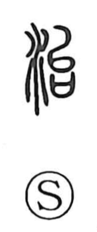

治

Uncategorized
Kun: osameru, osamaru, naoru, naosu | On: chi, ji
to govern ・ administration ・ politics ・ to cure ・ to heal ・ to put in order ・ to correct ・ to repair
Explanation
A phono-semantic character: the water element signals a relation to water, while the phonetic 台 points to the reading and, in its old form, depicts a plow set over a covenant vessel used to deposit prayers. That image evokes the rite performed at the start of cultivation—purifying the plow and praying for a rich harvest. Applied to water, 治 originally expressed the ritual act of bringing water under control. Because flood control was a central duty of early rulers along great, flood-prone rivers, the character naturally came to mean governing the realm and affairs of state. From there its sense broadened to curing the body or mind and, more generally, to putting things in order—correcting and repairing what is out of balance.